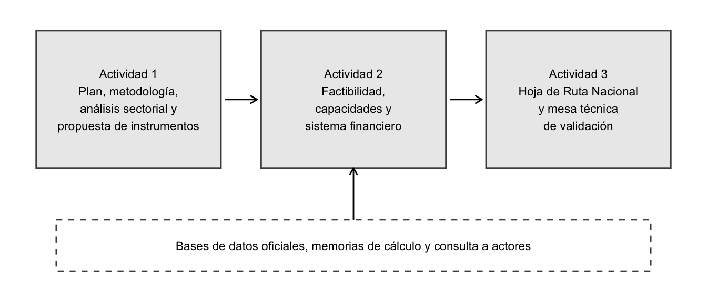

Familia | Qué incluye | Ejemplos |
|---|---|---|
Habilitantes | Registro de productores e importadores, trazabilidad, formalización de recicladores de base | Artículo 11 de la Ley 502; artículo 19 de la Ley 33 de 2018 |
Normativos y regulatorios | Leyes marco, prohibiciones, metas obligatorias, REP, contenido mínimo de material reciclado, ecomodulación | Ley 502 de Panamá; Ley 20.920 de Chile; Directiva 2019/904 de la Unión Europea |
Tributarios y tarifarios | Impuestos y tasas a productos de difícil valorización, depósito y reembolso, pago por generación, incentivos fiscales a la inversión | Impuesto a bolsas plásticas; impuesto al vertedero; exenciones de ITBMS |
Financieros | Líneas de crédito, garantías, financiamiento combinado, bonos temáticos, fondos de capital, taxonomías | Marco de Financiamiento Sostenible de Panamá; taxonomías de finanzas sostenibles |
Promoción y facilitación de inversiones | Compras públicas circulares, alianzas público-privadas, subsidios, ventanillas de facilitación | Artículo 12 de la Ley 502; criterios de sostenibilidad en contrataciones |
Capacidades y conciencia ambiental | Formación, asistencia técnica, campañas e información | Artículos 5 a 7 de la Ley 502; plataforma de indicadores |
Metodología de la consultoría sobre instrumentos económicos para la economía circular en Panamá
Producto 1, Actividad 1: metodología
Resumen ejecutivo
Este documento presenta la metodología de la consultoría para desarrollar instrumentos económicos que aumenten los flujos de recursos hacia la economía circular y potencien las inversiones en iniciativas de circularidad en Panamá, incluidos los modelos de responsabilidad extendida del productor (REP). La consultoría se ejecuta con el apoyo del programa de cooperación CEPAL-BMZ/GIZ “Promoviendo la Economía Circular” y responde a una solicitud de asistencia técnica del Ministerio de Ambiente (MiAMBIENTE) para implementar la Ley 502 de 2025 (Asamblea Nacional de Panamá, 2025).
La metodología organiza el trabajo en tres actividades que se alimentan en secuencia. La Actividad 1 caracteriza los sectores priorizados con indicadores cuantitativos y con eslabonamientos productivos, y propone catorce instrumentos con experiencia internacional. La Actividad 2 evalúa la factibilidad política y técnica de esos instrumentos, las capacidades institucionales del gobierno y del sistema financiero, y los mecanismos de movilización de recursos. La Actividad 3 diseña la Hoja de Ruta Nacional para el Financiamiento de la Economía Circular, con actores, fuentes de financiamiento, reformas, indicadores y una mesa técnica de validación.
Cuatro decisiones de método orientan todo el trabajo:
- Datos oficiales primero. Las cifras salen de bases construidas con estadísticas oficiales, con cada paso de cálculo documentado en memorias públicas, de modo que cualquier resultado puede rastrearse y reproducirse.
- Evidencia con grado de confianza. Cada indicador lleva una bandera de calidad (alta, media, baja o sin dato), y la información faltante se registra como hallazgo con su tratamiento, que puede ser un proxy o un análisis cualitativo estructurado.
- Juicio técnico explícito. La matriz de relevancia sectorial hace transparentes los criterios y deja los pesos para acordarlos con CEPAL y MiAMBIENTE, para que el ejercicio no incorpore preferencias implícitas.
- Secuencia en dos pasos. Las recomendaciones distinguen las condiciones habilitantes (registro, trazabilidad, capacidad institucional) de los instrumentos que dependen de ellas, porque la experiencia internacional muestra que los impuestos, tarifas y prohibiciones pierden eficacia sin fiscalización (Agencia Europea de Medio Ambiente, 2023).
El documento describe, para cada actividad, las preguntas que responde, los métodos, las fuentes, los productos y los criterios de calidad, y precisa los límites del enfoque.
Lista de cuadros y figuras
Cuadros
- Cuadro 3: Criterios de evaluación sectorial, indicadores y fuentes
- Cuadro 4: Banderas de calidad de los indicadores
- Cuadro 1: Familias de instrumentos del inventario
- Cuadro 5: Campos de la ficha normalizada de instrumento
- Cuadro 6: Criterios del filtro de factibilidad
- Cuadro 7: Funciones evaluadas en el análisis de capacidades institucionales
- Cuadro 8: Grupos de actores y mecanismos de consulta
- Cuadro 2: Productos y contenidos mínimos de los informes
- Cuadro 9: Glosario de siglas
Figuras
- Figura 1: Encadenamiento de las actividades de la consultoría
1 Introducción
La Comisión Económica para América Latina y el Caribe (CEPAL) considera a la economía circular uno de los sectores con alto potencial dinamizador y transformador para un desarrollo más sostenible e inclusivo. En la fase 2024-2026 del programa de cooperación CEPAL-BMZ/GIZ, la División de Desarrollo Sostenible y Asentamientos Humanos desarrolla estudios y recomendaciones de política pública que incorporan la economía circular en distintos sectores económicos de la región.
Panamá aprobó en noviembre de 2025 la Ley 502, que dicta normas para la implementación de la economía circular como estrategia ambiental (Asamblea Nacional de Panamá, 2025). MiAMBIENTE solicitó a la CEPAL asistencia técnica para implementarla, y uno de los temas prioritarios acordados es el desarrollo e identificación de instrumentos económicos para aumentar los flujos de recursos hacia la economía circular en los diversos sectores del país. Esta consultoría atiende ese tema.
Este documento responde a la primera parte de la Actividad 1, que pide desarrollar un plan de trabajo y una metodología. Es la guía de método para las tres actividades. El plan de trabajo y el análisis sectorial se presentan en documentos separados. Se dirige a la CEPAL y a MiAMBIENTE como contrapartes, y a los actores del sector público, el sistema financiero, el sector privado, la academia y la sociedad civil que participarán en las consultas.
2 Objetivos
2.1 Objetivo de la consultoría
Desarrollar instrumentos económicos para aumentar los flujos de recursos hacia la economía circular y potenciar inversiones en iniciativas de circularidad, incluyendo los modelos de REP.
2.2 Objetivos de este documento
- Precisar las preguntas, métodos, fuentes y productos de cada actividad de la consultoría.
- Establecer los criterios con que se evaluarán los sectores y los instrumentos, y la forma de documentar su calidad.
- Definir el tratamiento de la información faltante y de los supuestos.
- Describir la participación de actores y la validación de los resultados.
3 Antecedentes
3.1 Marco legal y de política
La Ley 502 establece finalidades que son el punto de partida de los instrumentos: reducir la generación de desechos, fomentar la valorización de residuos, establecer la REP, fomentar empleos verdes e incentivar el emprendimiento sostenible mediante financiamiento y apoyo técnico (Asamblea Nacional de Panamá, 2025, art. 2). Crea el Consejo Nacional de Economía Circular, adscrito a MiAMBIENTE (Asamblea Nacional de Panamá, 2025, art. 8), y le encarga un Plan Estratégico Nacional que debe incluir lineamientos para guías técnicas por actividad económica y para la REP, y mecanismos de monitoreo (Asamblea Nacional de Panamá, 2025, art. 10). Establece en el Sistema Nacional de Información Ambiental una plataforma de indicadores de economía circular (Asamblea Nacional de Panamá, 2025, art. 11) y modifica la ley de contrataciones públicas para incluir criterios de sostenibilidad y economía circular (Asamblea Nacional de Panamá, 2025, art. 12). El Ministerio de Ambiente debe reglamentar la ley (Asamblea Nacional de Panamá, 2025, art. 13).
La ley no define las tarifas de la REP, la ecomodulación ni los incentivos fiscales. Esas decisiones quedan para la reglamentación, lo que da a esta consultoría una oportunidad de aportar insumos técnicos mientras el reglamento se elabora.
La Hoja de Ruta de Economía Circular con enfoque de cambio climático, elaborada por MiAMBIENTE con el Programa de las Naciones Unidas para el Desarrollo (PNUD), priorizó seis sectores (residuos, recursos hídricos, energía, industrias, agricultura y alimentos, y ciudades y construcción) y siete líneas transversales, entre ellas el marco regulatorio, la producción circular con incentivos y la innovación (Ministerio de Ambiente de Panamá y Programa de las Naciones Unidas para el Desarrollo, 2024, p. 7). Otros antecedentes son la Política Basura Cero de la Ley 33 de 2018 (Asamblea Nacional de Panamá, 2018), la regulación de los plásticos de un solo uso de la Ley 187 de 2020 (Asamblea Nacional de Panamá, 2020) y el Plan Nacional de Gestión Integral de Residuos 2017-2027 (Autoridad de Aseo Urbano y Domiciliario, 2017).
En el sistema financiero, la Taxonomía de Finanzas Sostenibles de Panamá, publicada en marzo de 2024 por las superintendencias del sector, incluye la transición hacia una economía circular entre sus objetivos (Superintendencia de Bancos de Panamá et al., 2024). El Marco de Financiamiento Sostenible de la República permite emitir bonos temáticos con una categoría de economía circular (Ministerio de Economía y Finanzas de Panamá, 2024).
3.2 Experiencia regional e internacional
La CEPAL analizó las hojas de ruta de economía circular de nueve países de la región y encontró que los instrumentos económicos son una cuarta parte de las iniciativas del eje de políticas y que las estrategias de financiamiento son solo el 7 %. Concluyó que existe un amplio espacio para identificar fuentes de financiamiento y diseñar estrategias de financiamiento de la transición (Samaniego et al., 2022, pp. 26-27). La REP cuenta con la mayor trayectoria regional, con marcos legales en Chile (Ministerio del Medio Ambiente de Chile, 2016), Colombia (Ministerio de Ambiente y Desarrollo Sostenible de Colombia, 2018), Perú (Presidencia de la República del Perú, 2016) y otros países, y con una guía de la Organización para la Cooperación y el Desarrollo Económicos (Organización para la Cooperación y el Desarrollo Económicos, 2016). La Unión Europea ordena sus instrumentos económicos para la jerarquía de residuos en el anexo IV de su directiva marco (Parlamento Europeo y Consejo de la Unión Europea, 2018).
4 Marco conceptual
4.1 Economía circular y jerarquía de residuos
La Ley 502 define la economía circular a través de sus principios, entre ellos el diseño para la circularidad, el residuo mínimo, la jerarquía de la gestión de los residuos, que prioriza la prevención, la reducción, la reutilización, el reciclaje y el aprovechamiento antes de la disposición final, y la internalización de costos ambientales (Asamblea Nacional de Panamá, 2025, art. 3). Para efectos de la consultoría, la economía circular se entiende como el conjunto de prácticas que mantienen los materiales en los ciclos productivos el mayor tiempo posible (Asamblea Nacional de Panamá, 2025, art. 1). Los instrumentos económicos se evalúan por su capacidad de modificar los incentivos de quienes diseñan, producen, importan, consumen y gestionan los productos.
4.2 Instrumentos económicos y financieros
Los instrumentos se organizan en familias que siguen la clasificación de la Unión Europea (Parlamento Europeo y Consejo de la Unión Europea, 2018) y del conjunto de herramientas de la Agencia Alemana de Cooperación Internacional (GIZ), que distingue mecanismos públicos, público-privados, basados en REP y privados (Barkhau, 2026). La Cuadro 1 adapta esa clasificación a los tipos de instrumentos de la Ley 502.
Fuente: elaboración propia con base en (Asamblea Nacional de Panamá, 2025; Barkhau, 2026; Parlamento Europeo y Consejo de la Unión Europea, 2018).
4.3 Responsabilidad extendida del productor
La REP traslada a los productores e importadores la responsabilidad por la gestión de sus productos al final de su vida útil. Los marcos legales de la región fijan metas de recolección y valorización, y obligan a los productores a registrarse y a reportar (Ministerio del Medio Ambiente de Chile, 2016; Presidencia de la República del Perú, 2016). Dos factores influyen en su eficacia como instrumento económico. El primero es la ecomodulación, que ajusta la tarifa que paga el productor según el desempeño ambiental del producto, y permite que el sistema incentive el ecodiseño (Parlamento Europeo y Consejo de la Unión Europea, 2018, art. 8 bis; Ministerio del Medio Ambiente de Chile, 2020, art. 20). El segundo es la capacidad operativa, que incluye la trazabilidad de datos, la fiscalización y la inclusión de los recicladores de base (Agencia Europea de Medio Ambiente, 2023; Ministerio del Medio Ambiente de Chile, 2016, art. 32). La experiencia revisada indica que los instrumentos pierden eficacia cuando falta control. En un país con una proporción alta de empleo informal y un registro incipiente de importadores, la capacidad de registro y control es un prerrequisito.
5 Enfoque general de la consultoría
La consultoría se organiza en tres actividades con productos entregables, cada uno apoyado en el anterior. La Figura 1 resume la secuencia.

Cada actividad responde preguntas distintas, usa métodos propios y entrega productos específicos. La Cuadro 2 resume los contenidos mínimos de los informes, que incluyen introducción, resumen ejecutivo, objetivos, antecedentes, bibliografía, tabla de contenido con listas de cuadros y figuras, glosario de siglas, redacción en español y formatos editables.
Producto | Actividad | Contenido |
|---|---|---|
Producto 1 | Actividad 1 | Plan de trabajo y metodología; análisis de los sectores económicos priorizados con eslabonamientos productivos; propuesta de catorce instrumentos con experiencia internacional |
Producto 2 | Actividad 2 | Evaluación de la factibilidad política y técnica de los instrumentos, con análisis de efectos por sector; diagnóstico de capacidades institucionales; análisis del sistema financiero nacional |
Producto 3 | Actividad 3 | Hoja de Ruta Nacional para el Financiamiento de la Economía Circular: instrumentos, actores y roles, fuentes de financiamiento, reformas, indicadores y articulación con la Ley 502; mesa técnica de validación y sistematización de sus aportes |
Fuente: elaboración propia.
Además de los informes, los términos piden una presentación para cada producto y que se entreguen los documentos preliminares y finales en formatos editables (Word o Excel).
6 Metodología de la Actividad 1: análisis sectorial e instrumentos
6.1 Qué se busca y producto
La Actividad 1 busca establecer dónde están las mayores oportunidades y restricciones para la circularidad en la economía panameña y qué instrumentos de política han funcionado en otros países. Su producto es el plan de trabajo, esta metodología, el análisis de los sectores priorizados con sus eslabonamientos, y una propuesta de catorce instrumentos organizados por familia.
6.2 Delimitación de los sectores de política
Los sectores de política son los priorizados por las políticas existentes, que son los seis de la Hoja de Ruta (Ministerio de Ambiente de Panamá y Programa de las Naciones Unidas para el Desarrollo, 2024). Como la Hoja de Ruta y la Ley 502 no listan actividades económicas, la consultoría construye una tabla de equivalencias entre cada sector de política y las 80 actividades de las cuentas nacionales del Instituto Nacional de Estadística y Censo (INEC) (Instituto Nacional de Estadística y Censo (INEC), Contraloría General de la República, 2026). La regla es que cada actividad tiene un único sector principal, para que las cifras sumen sin doble conteo, y que las relaciones con otros sectores de política se registran aparte como secundarios. Cada asignación lleva su evidencia (artículo o página de la fuente) y se marca como Fuente si el documento de política menciona la actividad, o Inferido si el vínculo se deduce del flujo de materiales. La tabla se entrega en formato editable para que MiAMBIENTE y el Ministerio de Comercio e Industrias la validen.
6.3 Criterios, indicadores y fuentes
Los criterios de evaluación sectorial son los de la Cuadro 3. Cada criterio se traduce en indicadores con una fuente oficial primaria, y cuando no hay un dato oficial se usa un proxy o se trata de forma cualitativa. En total, el análisis sectorial utiliza 35 indicadores distintos.
Criterio | Indicadores | Fuente |
|---|---|---|
Producto interno bruto | Valor agregado bruto, participación, crecimiento anual compuesto | Cuadros de oferta y utilización del INEC, 2018-2024 |
Empleo, género y condición laboral | Puestos de trabajo, remuneración media, proporción de mujeres, informalidad | Matriz de empleo del INEC; Encuesta de Mercado Laboral; ILOSTAT |
Exportaciones, importaciones y competitividad | Exportaciones, importaciones, saldo comercial, apertura, importación de insumos | Cuadros de oferta y utilización; matriz insumo-producto |
Inversión | Formación bruta de capital fijo por producto y su estimación por actividad; inversión extranjera directa como complemento | INEC; Contraloría; solicitudes al MEF |
Concentración de mercado, barreras de entrada y salida | Número de empresas por tamaño y clase de actividad; análisis cualitativo de barreras | Directorio de Empresas y Locales; Censos Económicos; entrevistas |
Emisiones de gases de efecto invernadero | Emisiones por sector y categoría del IPCC, intensidad por valor agregado | EDGAR; inventario nacional de MiAMBIENTE |
Uso de recursos | Consumo de energía y de agua, consumo material doméstico | Balance Energético Nacional; Banco Mundial (extracciones de agua); estadísticas de las Naciones Unidas |
Potencial de recuperación de materiales secundarios | Generación y composición de residuos, exportaciones de desechos, residuos de construcción y electrónicos | Banco Mundial; UN Comtrade; diagnóstico nacional de residuos |
Eslabonamientos productivos | Encadenamientos hacia atrás y hacia adelante, multiplicadores de valor agregado y de empleo | Matriz insumo-producto del INEC, 2018 |
Fuente: elaboración propia con base en las fuentes citadas en el análisis sectorial.
Cada indicador del análisis sectorial lleva una bandera que comunica su grado de confianza (Cuadro 4). El análisis sectorial presenta esa bandera junto a las cifras.
Bandera | Significado |
|---|---|
Alta | Dato oficial desagregable a las actividades del sector, sin supuestos de asignación |
Media | Dato oficial que requiere un supuesto de asignación, por ejemplo de producto a actividad o de sección a sector |
Baja | Dato disponible solo para un grupo de sectores, de una sección más amplia o de una fuente externa con cobertura limitada |
Sin dato | El criterio no tiene fuente cuantitativa; se trata de forma cualitativa y se registra como brecha |
Fuente: elaboración propia.
6.4 Eslabonamientos productivos
Los eslabonamientos se calculan con el modelo de insumo-producto de Leontief (Miller y Blair, 2022) sobre la matriz de 76 actividades del INEC (Instituto Nacional de Estadística y Censo (INEC), Contraloría General de la República, 2024). Sea \(\mathbf{Z}\) la matriz de flujos intermedios domésticos, \(\mathbf{x}\) el vector de producción y \(\mathbf{A} = \mathbf{Z}\hat{\mathbf{x}}^{-1}\) la matriz de coeficientes técnicos. La inversa de Leontief es
\[ \mathbf{L} = (\mathbf{I} - \mathbf{A})^{-1}. \]
El encadenamiento hacia atrás de la actividad \(j\) es \(\sum_i l_{ij}\) y el encadenamiento hacia adelante de la actividad \(i\) es \(\sum_j l_{ij}\). Los índices dividen cada uno entre el promedio de todas las actividades, de modo que un valor mayor que 1 indica un encadenamiento superior al promedio. Una actividad con ambos índices mayores que 1 se clasifica como clave. Los multiplicadores de valor agregado y de empleo son \(\mathbf{v}'\mathbf{L}\) y \(\mathbf{e}'\mathbf{L}\), con \(\mathbf{v}\) el valor agregado por unidad de producción y \(\mathbf{e}\) los puestos de trabajo por unidad de producción. Los resultados se calculan por actividad y por sector, y se acompañan del coeficiente de importación de insumos para medir las fugas hacia el exterior.
Dos supuestos limitan la interpretación. Los coeficientes técnicos son los de 2018 y se suponen estables; los cálculos de valor agregado y empleo por unidad de producción son de ese año. Además, el enfoque de insumo-producto describe encadenamientos entre actividades; los multiplicadores indican la capacidad de arrastre de un sector, y el efecto de una política requiere un análisis adicional, que se desarrolla en la Actividad 2.
6.5 Matriz de relevancia sectorial
La matriz de relevancia sintetiza una selección de indicadores en puntajes de 1 a 5 según el lugar que ocupa cada sector entre los sectores con dato. Es un ordenamiento relativo. Para evitar que incorpore preferencias implícitas, los pesos iniciales son iguales y se acordarán con la CEPAL y MiAMBIENTE antes de usarla para orientar la selección de instrumentos. La matriz no sustituye el juicio técnico. Su función es hacer explícita y reproducible la comparación, y por eso se acompaña de las banderas de calidad.
6.6 Inventario de instrumentos
El inventario de la Actividad 1 propone, con base en la experiencia internacional, un conjunto de instrumentos de política pública, principalmente económicos, que pueden promover la circularidad en los sectores prioritarios. Primero, se revisan fuentes primarias (leyes, informes técnicos de instituciones y estudios de acceso abierto) sobre cada familia de instrumentos de la Cuadro 1. Segundo, se seleccionan los instrumentos que cumplen cuatro criterios: tienen respaldo en el marco legal panameño o en la Hoja de Ruta; responden a un rasgo de la economía panameña documentado en el análisis sectorial; cuentan con experiencia internacional documentada en una fuente primaria; y, en conjunto, cubren las familias de la Cuadro 1 y los seis sectores de política. Tercero, se asocia cada instrumento seleccionado con los sectores donde los datos indican relevancia y con el paso en que conviene iniciarlo, sin evaluar todavía su factibilidad. Lo que no pudo leerse en la fuente se marca como no verificado, de modo que el lector distinga lo establecido de lo reportado de segunda mano.
7 Metodología de la Actividad 2: factibilidad y capacidades
7.1 Qué se busca y producto
La Actividad 2 busca determinar cuáles de los catorce instrumentos propuestos en la Actividad 1 son viables y convenientes para Panamá, y bajo qué condiciones. Para ello se convierte cada instrumento en una ficha, se evalúa su factibilidad política, técnica, institucional y financiera, se estima su efecto por sector, se diagnostican las capacidades del gobierno y del sistema financiero, y se mapean los mecanismos que permiten movilizar recursos. La actividad no diseña todavía los instrumentos en detalle, pues eso corresponde a la Actividad 3. Su producto es el segundo informe.
7.2 Fichas normalizadas y lista corta
Cada instrumento propuesto en la Actividad 1 se documenta con una ficha normalizada (Cuadro 5), que reúne en un mismo formato lo que se sabe de él y lo que falta por confirmar. Con las fichas se define la lista corta de instrumentos que pasa a la evaluación detallada. La evidencia de cada ficha lleva su nivel de verificación, y lo que no pudo leerse en la fuente se marca como no verificado, de modo que el lector distinga lo establecido de lo reportado de segunda mano.
Campo | Contenido |
|---|---|
Problema o barrera | Precio, riesgo, financiamiento, coordinación, información, capacidad o cumplimiento que busca corregir |
Sector y flujo objetivo | Sector de política, producto o flujo de material, y actor cuyo comportamiento se pretende modificar |
Mecanismo | Incentivo, obligación, reducción de riesgo, señal de precio, acceso a capital o facilitación de inversión |
Requisitos normativos e institucionales | Base legal necesaria, entidades responsables, capacidad de fiscalización y seguimiento |
Fuente de recursos | Costo fiscal o financiero, potencial de apalancamiento y sostenibilidad del mecanismo |
Experiencia internacional | Países, base legal, año y evidencia de efectos, con su fuente y su grado de verificación |
Datos e indicadores | Datos necesarios para implementarlo y monitorearlo |
Riesgos | Elusión, efectos no deseados, efectos distributivos |
Fuente: elaboración propia.
7.3 Evaluación de factibilidad
Cada instrumento de la lista corta se evalúa con los criterios de la Cuadro 6, en una escala ordinal con justificación escrita. La puntuación no determina la selección: ordena la discusión con los actores y hace explícitos los juicios.
Criterio | Pregunta de evaluación |
|---|---|
Impacto potencial | ¿Puede movilizar recursos y cambiar prácticas hacia la circularidad? |
Factibilidad técnica | ¿Existen tecnología, mercado de materiales secundarios, trazabilidad, datos y capacidad de medición? |
Factibilidad institucional | ¿Hay mandato, coordinación, capacidad operativa y de supervisión? |
Factibilidad política y regulatoria | ¿Es compatible con el marco legal, qué reformas requiere y qué aceptabilidad tiene entre los actores? |
Factibilidad financiera | ¿Cuál es la fuente de fondeo, el costo, el riesgo, la bancabilidad y el potencial de apalancamiento? |
Tiempo de implementación | ¿Es una acción inmediata, de mediano plazo o una reforma estructural? |
Equidad y competitividad | ¿Cómo se distribuyen costos y beneficios y qué efectos tiene en las micro, pequeñas y medianas empresas, el empleo y la competencia? |
Fuente: elaboración propia.
7.4 Análisis de efectos por sector
El análisis de efectos es cuantitativo cuando los datos lo permiten y cualitativo estructurado cuando no. Para los instrumentos que operan como un cargo sobre un producto (un impuesto, una tarifa de REP o un depósito), se usa el modelo de precios de insumo-producto: si un cargo eleva el costo de una actividad, el modelo traslada ese costo a los precios de las actividades que la usan como insumo, bajo el supuesto de traslado completo (Miller y Blair, 2022). Con él se estima la incidencia sobre los sectores y sobre los hogares, a partir de los coeficientes de la matriz. Para los instrumentos financieros (garantías, líneas de crédito, bonos), el análisis se basa en la capacidad del sistema financiero, la demanda potencial de proyectos y las experiencias comparadas.
Toda estimación se acompaña de una nota sobre la disponibilidad y el grado de confianza de los datos. Cuando la cuantificación no es defendible, se usa un análisis cualitativo con criterios y escalas explícitas, como corresponde cuando faltan datos.
7.5 Capacidades institucionales
La evaluación de capacidades de gobierno y del sistema financiero identifica fortalezas, brechas y necesidades de fortalecimiento en las funciones de la Cuadro 7. Se basa en el análisis de mandatos legales, en entrevistas semiestructuradas y en la revisión de informes institucionales.
Función | Qué se evalúa |
|---|---|
Regular | Mandato legal, capacidad de elaborar y modificar reglamentos, coordinación entre entidades |
Registrar | Registros de productores, importadores y gestores; interoperabilidad de datos |
Recaudar y administrar recursos | Capacidad de recaudar tarifas o tributos, de custodiar fondos y de asignarlos |
Controlar y fiscalizar | Inspección, auditoría de terceros, sanciones y capacidad aduanera |
Monitorear y reportar | Indicadores, plataforma de información y reportes periódicos |
Financiar | Productos financieros, evaluación de riesgo de proyectos circulares y bancabilidad |
Fuente: elaboración propia.
7.6 Análisis del sistema financiero
El análisis del sistema financiero mapea los actores (banca pública y privada, fondos de inversión, aseguradoras, mercado de valores, financiamiento verde y otras fuentes de financiamiento sostenible), los instrumentos que ofrecen y las barreras que enfrentan los proyectos circulares. Se articula con la taxonomía de finanzas sostenibles (Superintendencia de Bancos de Panamá et al., 2024) y con el marco soberano de financiamiento sostenible (Ministerio de Economía y Finanzas de Panamá, 2024). El aporte diferenciado es cerrar la brecha entre lo que la taxonomía define como elegible y la demanda real de proyectos circulares financiables.
8 Metodología de la Actividad 3: Hoja de Ruta
8.1 Qué se busca y producto
La Actividad 3 busca convertir los instrumentos que superen la evaluación de la Actividad 2 en una Hoja de Ruta Nacional para el Financiamiento de la Economía Circular, que MiAMBIENTE y el Consejo puedan usar en la implementación de la Ley 502. Para ello se diseña cada instrumento con sus montos, metas, responsables y plazos, se definen los actores y sus roles, se identifican las fuentes de financiamiento y las reformas necesarias, y se validan los resultados con actores del sector público, el sistema financiero, el sector privado, la academia y la sociedad civil. Su producto es el tercer informe.
8.2 Contenido de la Hoja de Ruta
El contenido de la Hoja de Ruta es: el diseño de los instrumentos financieros aplicables a la realidad nacional, incluidos los modelos de REP; los actores responsables y sus roles en la implementación, el seguimiento y la evaluación; el mapeo de fuentes de financiamiento nacionales e internacionales, públicas y privadas; las reformas normativas, regulatorias o institucionales requeridas; los indicadores de seguimiento y evaluación; y la articulación con la Ley 502 y otros instrumentos nacionales.
8.3 Reglas para ordenar las recomendaciones
Para ordenar las recomendaciones se aplican tres reglas:
- Secuencia en dos pasos. Primero los instrumentos habilitantes (registro, trazabilidad, capacidad institucional) y después los que dependen de ellos, como tarifas, impuestos y metas.
- Utilización de la institucionalidad existente. Se prefieren los mecanismos que se apoyan en instrumentos ya vigentes, como los incentivos del Ministerio de Comercio e Industrias, la taxonomía y el marco soberano de financiamiento, antes que crear instrumentos nuevos.
- Trazabilidad de cada recomendación. Cada recomendación se rastrea hasta una fuente, un criterio de selección y una necesidad institucional o de mercado identificada.
Los indicadores de seguimiento se diseñan en coordinación con la plataforma de indicadores que ordena la Ley 502 (Asamblea Nacional de Panamá, 2025, art. 11), para que sirvan al seguimiento de la ley y de los instrumentos que se desarrollen en su marco.
9 Estrategia de datos y control de calidad
9.1 Principios
La estrategia de datos sigue un orden de preferencia: primero información oficial nacional, luego fuentes internacionales comparables y por último proxies o evidencia cualitativa cuando hay vacíos. Toda cifra utilizada proviene de una base de datos construida por la consultoría, y cada base tiene una memoria de cálculo pública que documenta los pasos en código, de modo que pueden auditarse y reproducirse. Las memorias cubren la equivalencia de sectores, las cuentas por actividad, el empleo, los eslabonamientos, las emisiones, los recursos y residuos, la inversión y la estructura empresarial, y la síntesis sectorial.
9.2 Registro de brechas
La consultoría mantiene un registro de vacíos de información y de las decisiones que se tomaron para suplirlos. Las brechas más relevantes son la ausencia de cuotas de mercado, de datos sobre recicladores de base y de series anuales de residuos. Cada brecha se traduce en una solicitud de información por las vías formales, con la contraparte, y en un tratamiento alternativo documentado. La coordinación con la consultoría de sistema de información e indicadores del programa evita duplicar solicitudes.
9.3 Reproducibilidad
Los cálculos se hacen en un solo lenguaje de programación (R) y con rutas relativas al proyecto, de modo que quien tenga los datos de origen puede regenerar las bases. El código se versiona y las bases de resultados se exportan en formatos abiertos y editables. La bibliografía de cada documento se arma a partir de una bibliografía maestra con las fuentes verificadas.
9.4 Tratamiento de la evidencia internacional
La evidencia sobre instrumentos proviene de leyes, informes técnicos de instituciones y estudios de acceso abierto. Cada dato lleva su fuente y página. Lo que no se pudo leer en el original, por ejemplo cuando un sitio bloqueó la descarga, se marca como no verificado y no se usa como base de recomendaciones.
10 Participación de actores
La participación no se limita a la mesa técnica de validación final. Se realizan entrevistas semiestructuradas y reuniones técnicas durante el desarrollo de las actividades, para completar vacíos de datos, probar la factibilidad, identificar incentivos y anticipar cuellos de botella. La Cuadro 8 resume los grupos y su propósito.
Grupo | Propósito de la consulta | Mecanismo |
|---|---|---|
Gobierno | MiAMBIENTE y entidades con competencias económicas, financieras, productivas, comerciales, tributarias, municipales y de gestión de residuos; el Ministerio de Economía y Finanzas, incluida la Dirección de Crédito Público | Entrevistas y reuniones técnicas |
Sistema financiero | Banca pública y privada, fondos de inversión, superintendencias y proveedores de financiamiento sostenible | Entrevistas |
Sector privado | Gremios y empresas de los sectores de política, productores e importadores sujetos o potencialmente sujetos a REP, gestores y valorizadores de residuos | Entrevistas y mesa técnica |
Academia y sociedad civil | Centros técnicos, universidades y organizaciones con experiencia en circularidad y gestión de residuos | Entrevistas y mesa técnica |
Fuente: elaboración propia.
La mesa técnica de validación, con participación del sector público, privado, académico y de la sociedad civil, presenta la propuesta de la Actividad 3. Sus aportes se sistematizan en un documento que registra qué se recibió, qué se incorporó y por qué se descartó lo demás.
11 Limitaciones del enfoque
- Alcance de los datos. Varios criterios solo se pueden evaluar a nivel de sección económica o con supuestos de asignación. El análisis sectorial detalla las brechas.
- Año de la matriz. Los eslabonamientos son de 2018 y suponen coeficientes estables.
- Sectores de política. La equivalencia entre sectores y actividades es un trabajo de la consultoría y requiere validación.
- Evidencia internacional. Las evaluaciones de efectos son más abundantes para algunos instrumentos (bolsas plásticas, depósito y reembolso, vertedero) que para otros (REP, ecomodulación), y su transferencia a Panamá depende del contexto.
- Efectos de los instrumentos. El análisis cuantitativo usa un modelo de precios con traslado completo, que es una aproximación. No incluye cambios de comportamiento de los consumidores ni de los productores.
Glosario de siglas
Sigla | Significado |
|---|---|
CEPAL | Comisión Económica para América Latina y el Caribe |
EDGAR | Base de datos de emisiones para la investigación atmosférica global (Emissions Database for Global Atmospheric Research) |
GIZ | Agencia Alemana de Cooperación Internacional |
IED | Inversión extranjera directa |
INEC | Instituto Nacional de Estadística y Censo |
IPCC | Grupo Intergubernamental de Expertos sobre el Cambio Climático |
ITBMS | Impuesto de transferencia de bienes corporales muebles y la prestación de servicios |
MEF | Ministerio de Economía y Finanzas |
MiAMBIENTE | Ministerio de Ambiente de Panamá |
PNUD | Programa de las Naciones Unidas para el Desarrollo |
REP | Responsabilidad extendida del productor |